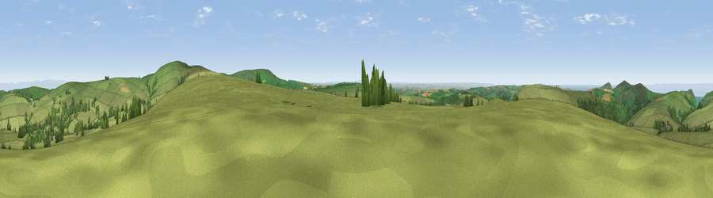

Viewpoint near Parracombe
#4601 in England · top 15% of its area beats it · near ParracombeWhere it is
The exact computed spot (SS 66200 43425). Click the marker for map links.
The view, rendered

A 360° render of this exact spot computed from the terrain model, tree cover and land cover — summer colours, afternoon light, calibrated against photographs of famous viewpoints. Real trees, hedges and buildings will differ in detail.
The panorama
Grey silhouette: terrain skyline in each direction (720 bearings, Earth curvature and refraction included). Dashed green: skyline with trees (+15 m) and buildings (+8 m) as obstacles. Blue strip: how far the ground is visible on each bearing.
Where the view opens
Wedge length = distance to the farthest visible ground on that bearing (vegetation-aware). Rings at 10, 25 and 50 km.
What fills the view
84% grassland · 9% woodland · 4% water · 1% cropland ·
Angular shares of the visible panorama (visual magnitude), not map area. Landscape diversity 0.26 (0–1 Shannon).
Key numbers
More beautiful places nearby
The staircase of upgrades: each row has a higher view potential than everything closer. Driving times are estimates from straight-line distance, calibrated against real road routing — check an actual route before setting out.
| Place | Direction | Drive | Score |
|---|---|---|---|
| Viewpoint near Challacombe | E · 2 km | ~6 min | 72.2 |
| Viewpoint near Challacombe | E · 3 km | ~8 min | 77.1 |
| Viewpoint near Martinhoe | N · 5 km | ~12 min | 82.1 |
| Viewpoint near Martinhoe | NW · 5 km | ~12 min | 86.5 |
| Viewpoint near Martinhoe | N · 6 km | ~13 min | 87.2 |
| Holdstone Hill | NW · 6 km | ~13 min | 90.2 |
| The Knoll | ESE · 103 km | ~128 min | 91.0 |
51.17436, -3.91539 · source: screening · position refined by local search. Computed location — check access rights before visiting.